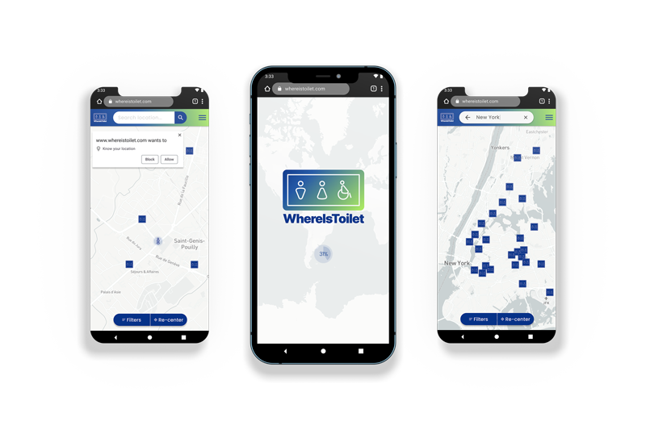

A kingdom for a toilet!
It competes with diaper manufacturers
Project overview
Design a user-friendly responsive web application for searching toilets, especially for seniors, based on geolocation.
Role
UI/UX designer
Time
5 weeks
Platform
Browser
Goal
Intuitive to use when there is time pressure
Challenge
Adaptation for the elderly & no duplication of existing applications
From MVP to Mid-Fidelity
The usability test was attended by 3 people representing my personas. Each of them went through 3 tasks. To get the best results, I performed 2 MVP tests and two mid-fidelity prototype tests.
goal
Checking whether user flows have been built well.
tasks
#1 Please find toilets in New York.
You are going to visit New York. You don’t know where you will
end up yet, but you want to ensure
that you can use the toilet wherever it is.
[testing search bar]
#2 How do you find out which toilet
is closest to you?
[testing whether the user can see
his
location on the map and whether he
will use the information pinned
to the toilet]
#3 You don’t have any cash, only
a credit card. How do you find
free toilets?
[finding & using filter testing]
First prototype
I prepared sketches for the three user paths and two iterations for each flow.
Second prototype

Creating visual language
I wanted to achieve maximum usability in this project, ease of navigation, and that feeling of "after all, there is nothing special here, but it's easy to use." Something similar to Google Maps, which is not the the peak of design, but it serves its functions perfectly.
So what does it look like in the end?
Simplicity, no oversaturation of elements guarantees no cognitive overload for the user. Immediate user location.
Quick access to filtering option - extensive enough buttons even for the visually challenged.
Eye-catching selection of the use of filtering - contrast ratio tested [7.73:1].

Precise information on how to get to the restroom with the estimated time. Possibility to add advertising in the form of a point sponsor.


Did I achieve the Goal and cope with the Challenge?
Usability tests showed:
- the application architecture is simple and intuitive,
- older people didn't have any problem with clickable elements and with contrast ratio.
Application uses common patterns, but it's not a direct copy of existing apps. Any conflicting feedback from users was resolved by re-testing the application.
See full case study >>Special Thanks
Users - it would be more difficult without you.
External experts - Madgalena S. (project manager), Marcin C. (senior full stack developer), and Gośka K. (life & work coach) - thank you for creating a virtual team with me; your insight has contributed a lot to my project.
Fellow CF students - thank you for your time and feedback.
CF tutor and mentor - your experience and quick responses allowed me to get through this project painlessly and creatively.